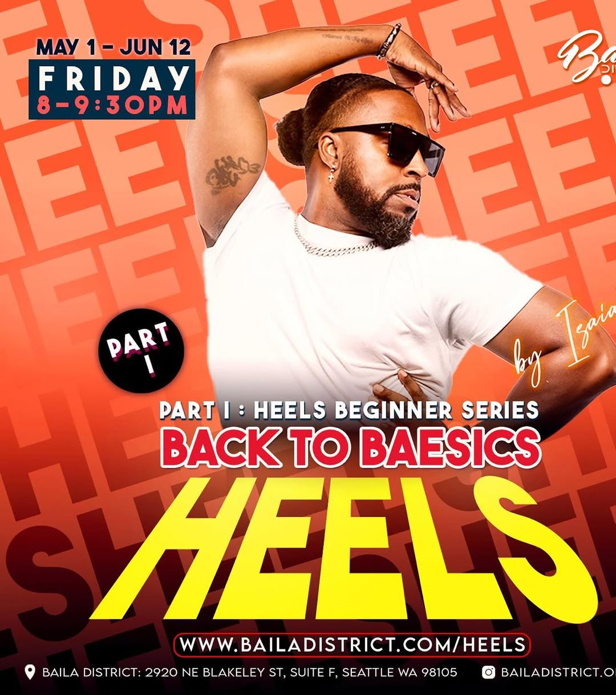

Behind the Artist
Coaching for artists who need to look as good as they sound.
Get Notified When This LaunchesThe Artist Under the Artist
You have heard artists who can sing but cannot command a stage. You have seen performers who have presence but freeze on camera. Behind the Artist is the coaching that closes that gap.
Zay has been helping artists develop their full stage-to-screen presence as a component of ZB Performance Training Co. This is the process of building that into a standalone offering for any performing artist who needs it: vocalists, rappers, content creators, and public speakers who want to up their stage and screen presence.
Currently embedded inside ZB Performance Training Co. and not yet available as a standalone. The standalone is in planning. Sign up to be notified when it launches.

What Zay Coaches
Stage Presence
How to hold a stage without looking like you are trying to. The difference between showing up and owning it. Zay has built this skill across years of teaching, performing, and showing up on camera.
Camera Work
Performing for a lens is a different skill than performing for a live audience. Zay has built this into ZB Performance Training since the beginning. Now it becomes its own thing.
Microphone Technique
How to work a mic. Projection, presence, and the habits that separate a polished performer from someone who clearly just picked it up.
On-Camera Confidence
For content creators and performers who freeze up or feel stiff in front of a camera. Practical drills and real-time feedback.
Artist Identity
The intangible: knowing who you are as a performer so the audience knows it too. Zay's pedagogy starts with identity. That applies here too.
Cross-Context Presence
The same confidence that kills in a studio session, in a live show, and in a brand meeting. Building a presence that travels.
For Touring and Music Video Artists
For artists going on tour, shooting music videos, or building a live show, Behind the Artist extends into specialized work Zay has built across years of choreography and stage direction.
-
01
Strength and Performance Training Conditioning for performers who need stamina for full sets, multi-night shows, or back-to-back shoot days.
-
02
Live Music and Music Video Direction Stage choreography for live performances, plus direction and movement for music video shoots.
-
03
Tourography End-to-end tour choreography: setlist staging, transitions, and the moments that make a tour feel like a show, not a setlist.
The Artist Who Has the Skill but Not Yet the Presence
- Vocalists and rappers who sound great in the booth but go quiet on stage.
- Content creators and social performers who want to sharpen their on-camera presence.
- Public speakers who want the confidence of a performer behind every presentation.
- Performing artists of any discipline who want to close the gap between their talent and their presence.
Building Now. Launching Soon.
Behind the Artist is currently offered as a module inside ZB Performance Training Co. The standalone is in development. Sign up to be notified when it launches.
Get Notified When This Launches